All tested models.
One metric at a time.
15 figures · white backgrounds · 7680 × 4320 PNG · scalable SVG. The 12 metric cards use the final matched seven-configuration study. Two historical comparisons remain separate, with missing and failed trials labeled.
Seven configurations. The measured tradeoffs.
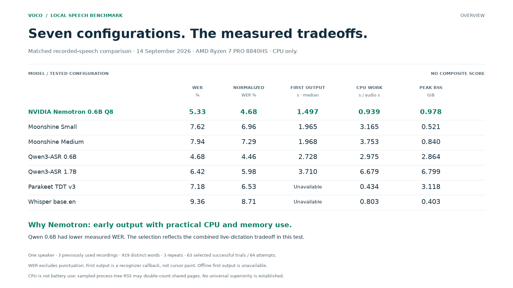
All seven configurations, same one-speaker corpus. WER, normalized WER, first callback, CPU work and sampled memory. No composite grade.
Word error rate
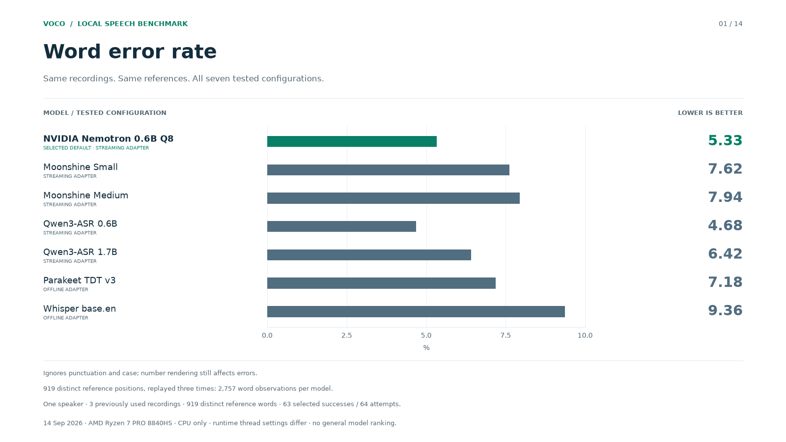
Same recordings. Same references. All seven tested configurations. Ignores punctuation and case; number rendering still affects errors. 919 distinct reference positions, replayed three times: 2,757 word observations per model. One speaker · 3 previously used recordings · 919 distinct reference words · 63 selected successes / 64 attempts. 14 Sep 2026 · AMD Ryzen 7 PRO 8840HS · CPU only · runtime thread settings differ · no general model ranking.
Contraction-normalized word error rate
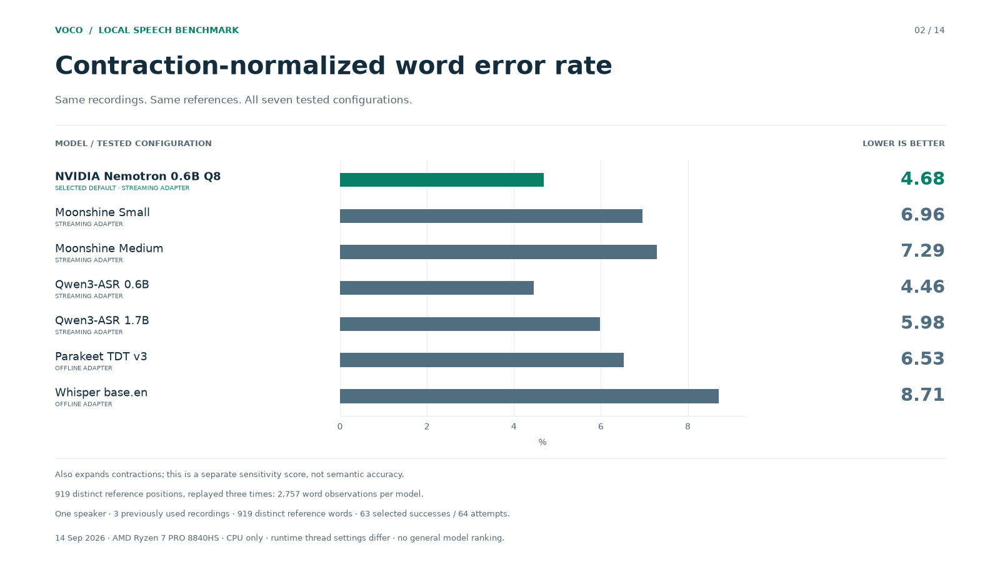
Same recordings. Same references. All seven tested configurations. Also expands contractions; this is a separate sensitivity score, not semantic accuracy. 919 distinct reference positions, replayed three times: 2,757 word observations per model. One speaker · 3 previously used recordings · 919 distinct reference words · 63 selected successes / 64 attempts. 14 Sep 2026 · AMD Ryzen 7 PRO 8840HS · CPU only · runtime thread settings differ · no general model ranking.
First recognizer output
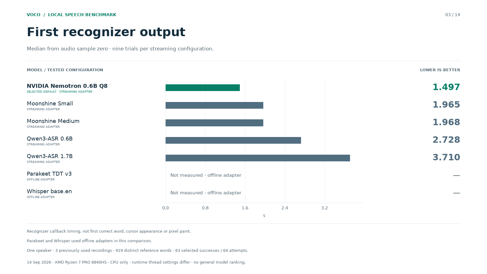
Median from audio sample zero · nine trials per streaming configuration. Recognizer callback timing, not first correct word, cursor appearance or pixel paint. Parakeet and Whisper used offline adapters in this comparison. One speaker · 3 previously used recordings · 919 distinct reference words · 63 selected successes / 64 attempts. 14 Sep 2026 · AMD Ryzen 7 PRO 8840HS · CPU only · runtime thread settings differ · no general model ranking.
CPU work per second of audio
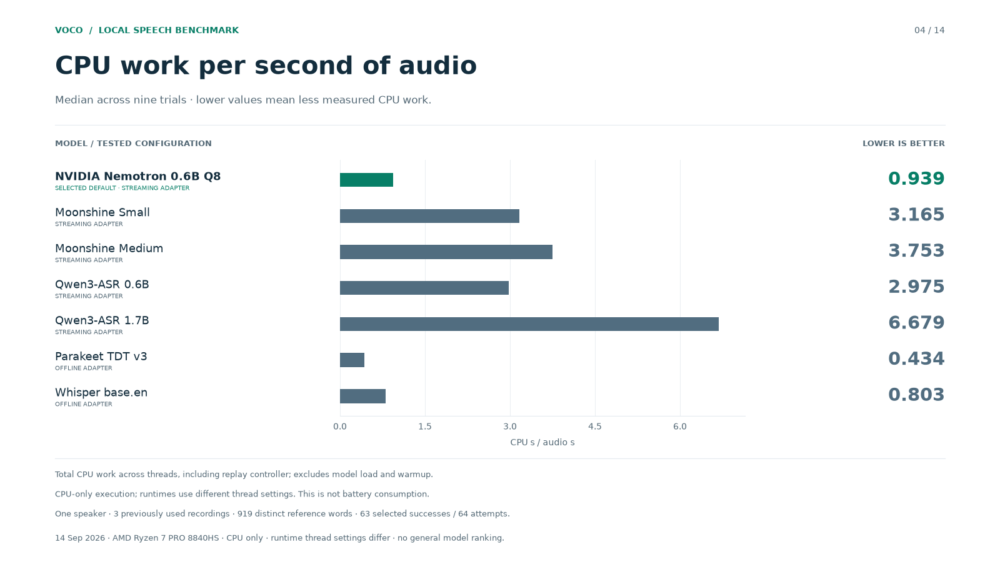
Median across nine trials · lower values mean less measured CPU work. Total CPU work across threads, including replay controller; excludes model load and warmup. CPU-only execution; runtimes use different thread settings. This is not battery consumption. One speaker · 3 previously used recordings · 919 distinct reference words · 63 selected successes / 64 attempts. 14 Sep 2026 · AMD Ryzen 7 PRO 8840HS · CPU only · runtime thread settings differ · no general model ranking.
Peak sampled resident memory
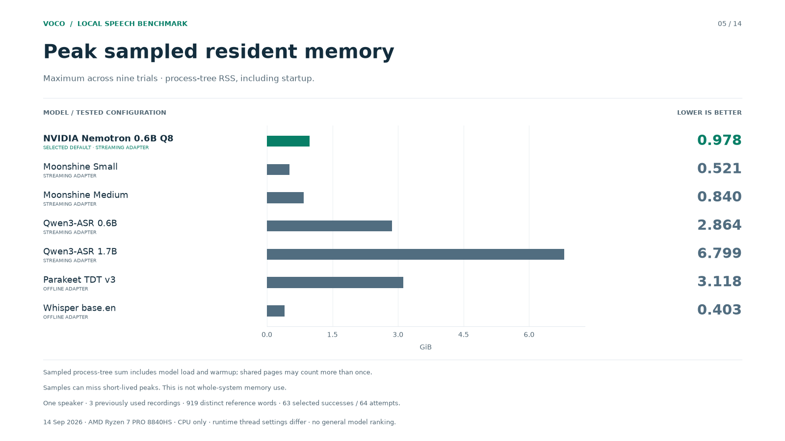
Maximum across nine trials · process-tree RSS, including startup. Sampled process-tree sum includes model load and warmup; shared pages may count more than once. Samples can miss short-lived peaks. This is not whole-system memory use. One speaker · 3 previously used recordings · 919 distinct reference words · 63 selected successes / 64 attempts. 14 Sep 2026 · AMD Ryzen 7 PRO 8840HS · CPU only · runtime thread settings differ · no general model ranking.
Work remaining after speech ends
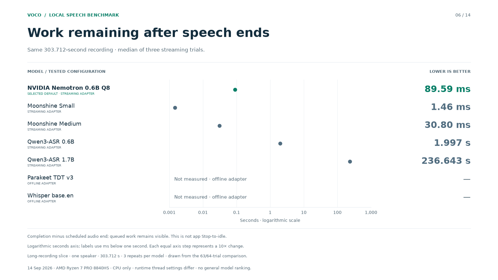
Same 303.712-second recording · median of three streaming trials. Completion minus scheduled audio end; queued work remains visible. This is not app Stop-to-idle. Logarithmic seconds axis; labels use ms below one second. Each equal axis step represents a 10× change. Long-recording slice · one speaker · 303.712 s · 3 repeats per model · drawn from the 63/64-trial comparison. 14 Sep 2026 · AMD Ryzen 7 PRO 8840HS · CPU only · runtime thread settings differ · no general model ranking.
Text available when audio ends
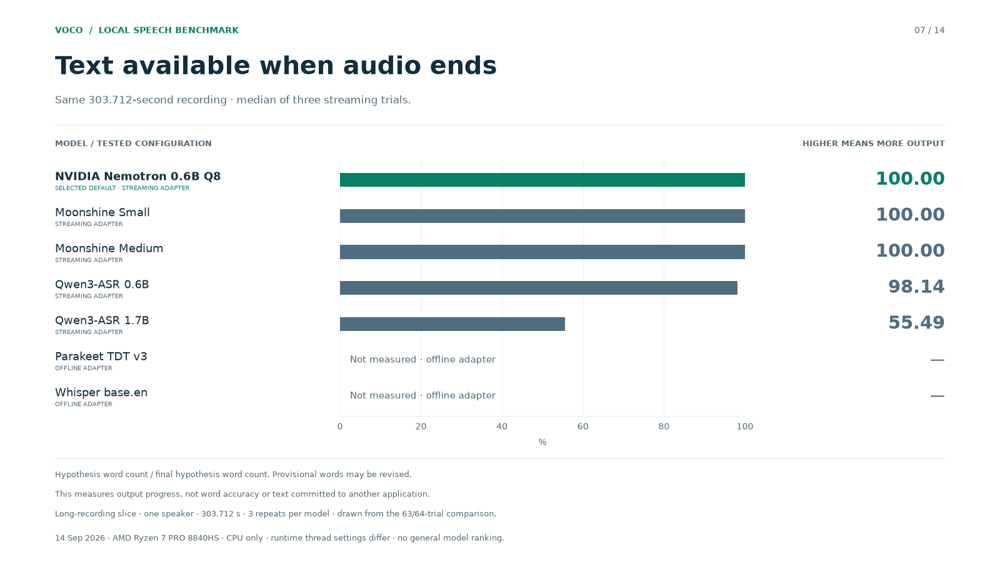
Same 303.712-second recording · median of three streaming trials. Hypothesis word count / final hypothesis word count. Provisional words may be revised. This measures output progress, not word accuracy or text committed to another application. Long-recording slice · one speaker · 303.712 s · 3 repeats per model · drawn from the 63/64-trial comparison. 14 Sep 2026 · AMD Ryzen 7 PRO 8840HS · CPU only · runtime thread settings differ · no general model ranking.
Completed-prefix revisions
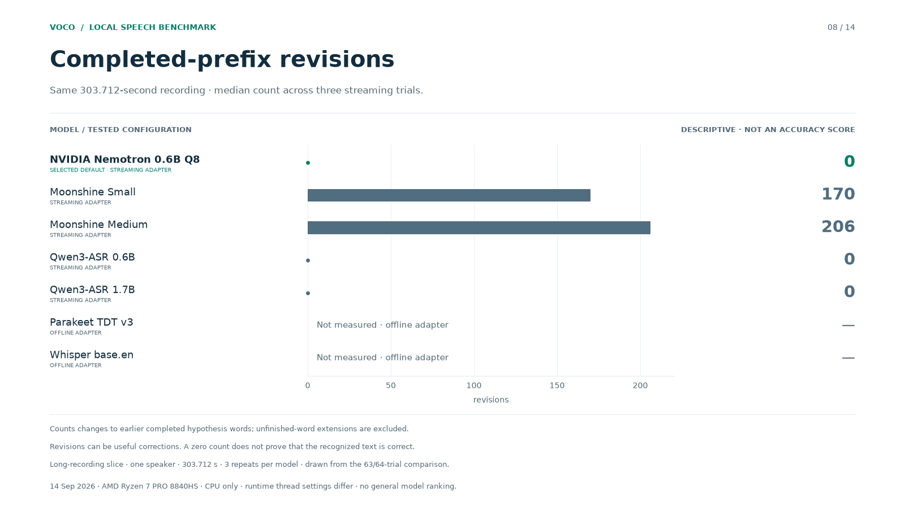
Same 303.712-second recording · median count across three streaming trials. Counts changes to earlier completed hypothesis words; unfinished-word extensions are excluded. Revisions can be useful corrections. A zero count does not prove that the recognized text is correct. Long-recording slice · one speaker · 303.712 s · 3 repeats per model · drawn from the 63/64-trial comparison. 14 Sep 2026 · AMD Ryzen 7 PRO 8840HS · CPU only · runtime thread settings differ · no general model ranking.
Longest observed text-update gap
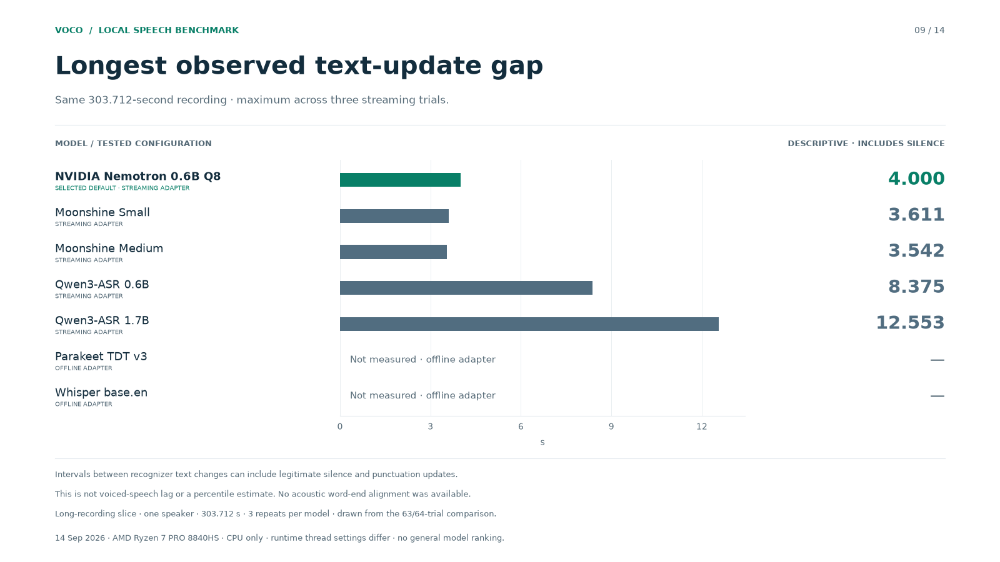
Same 303.712-second recording · maximum across three streaming trials. Intervals between recognizer text changes can include legitimate silence and punctuation updates. This is not voiced-speech lag or a percentile estimate. No acoustic word-end alignment was available. Long-recording slice · one speaker · 303.712 s · 3 repeats per model · drawn from the 63/64-trial comparison. 14 Sep 2026 · AMD Ryzen 7 PRO 8840HS · CPU only · runtime thread settings differ · no general model ranking.
Model loading time
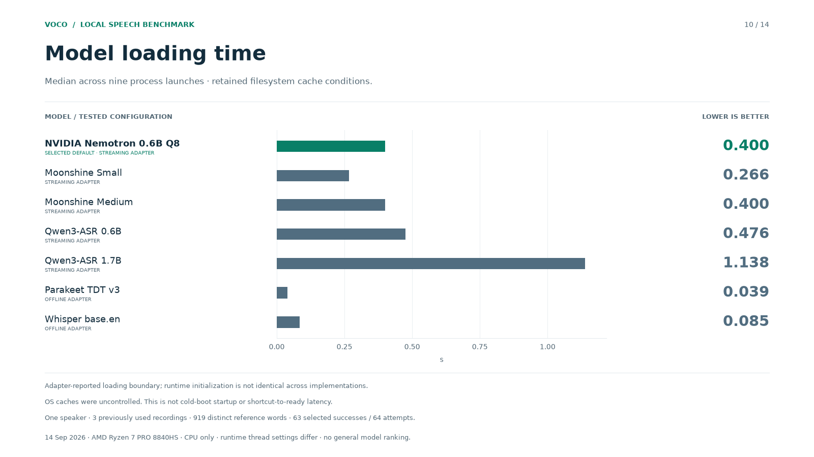
Median across nine process launches · retained filesystem cache conditions. Adapter-reported loading boundary; runtime initialization is not identical across implementations. OS caches were uncontrolled. This is not cold-boot startup or shortcut-to-ready latency. One speaker · 3 previously used recordings · 919 distinct reference words · 63 selected successes / 64 attempts. 14 Sep 2026 · AMD Ryzen 7 PRO 8840HS · CPU only · runtime thread settings differ · no general model ranking.
Warmup decoding time
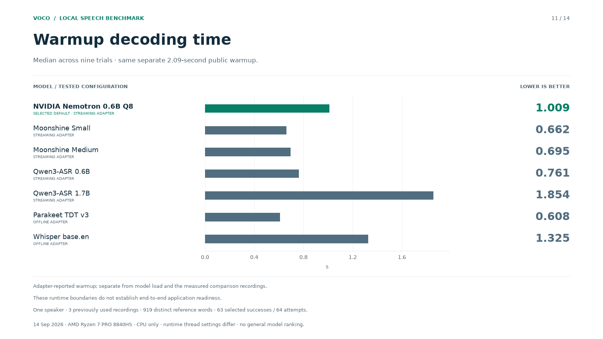
Median across nine trials · same separate 2.09-second public warmup. Adapter-reported warmup; separate from model load and the measured comparison recordings. These runtime boundaries do not establish end-to-end application readiness. One speaker · 3 previously used recordings · 919 distinct reference words · 63 selected successes / 64 attempts. 14 Sep 2026 · AMD Ryzen 7 PRO 8840HS · CPU only · runtime thread settings differ · no general model ranking.
Full-recording offline decoding
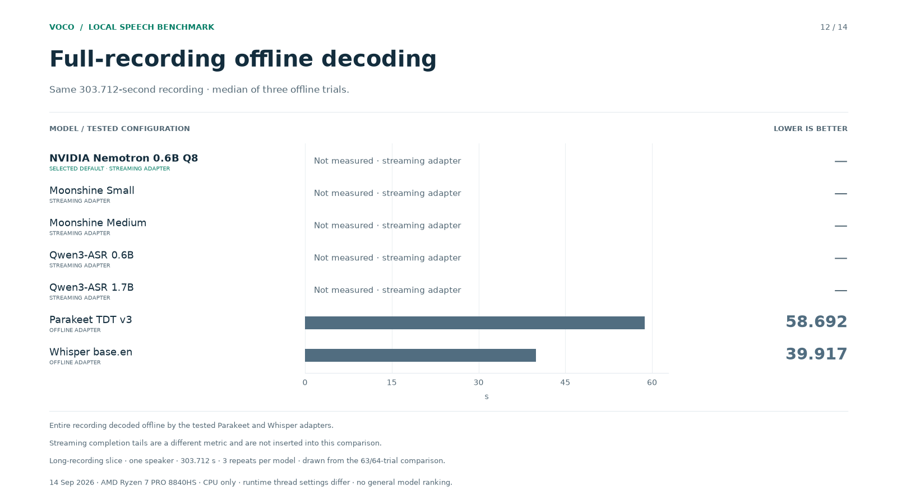
Same 303.712-second recording · median of three offline trials. Entire recording decoded offline by the tested Parakeet and Whisper adapters. Streaming completion tails are a different metric and are not inserted into this comparison. Long-recording slice · one speaker · 303.712 s · 3 repeats per model · drawn from the 63/64-trial comparison. 14 Sep 2026 · AMD Ryzen 7 PRO 8840HS · CPU only · runtime thread settings differ · no general model ranking.
Earlier public-speech accuracy
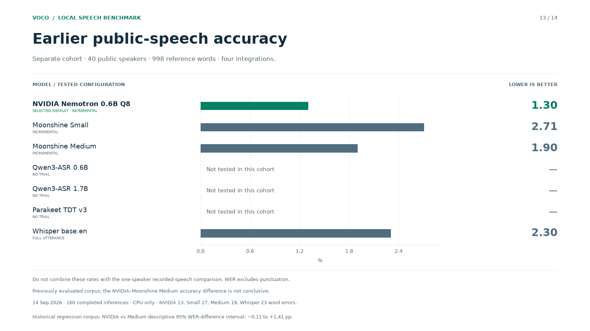
Separate cohort · 40 public speakers · 998 reference words · four integrations. Do not combine these rates with the one-speaker recorded-speech comparison. WER excludes punctuation. Previously evaluated corpus; the NVIDIA–Moonshine Medium accuracy difference is not conclusive. 14 Sep 2026 · 160 completed inferences · CPU only · NVIDIA 13, Small 27, Medium 19, Whisper 23 word errors. Historical regression corpus; NVIDIA vs Medium descriptive 95% WER-difference interval: −0.11 to +1.41 pp.
Earlier application Stop-to-idle
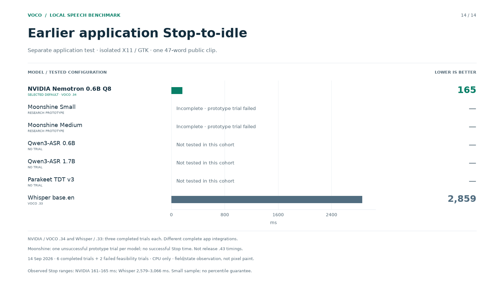
Separate application test · isolated X11 / GTK · one 47-word public clip. NVIDIA / VOCO .34 and Whisper / .33: three completed trials each. Different complete app integrations. Moonshine: one unsuccessful prototype trial per model; no successful Stop time. Not release .43 timings. 14 Sep 2026 · 6 completed trials + 2 failed feasibility trials · CPU only · field/state observation, not pixel paint. Observed Stop ranges: NVIDIA 161–165 ms; Whisper 2,579–3,066 ms. Small sample; no percentile guarantee.